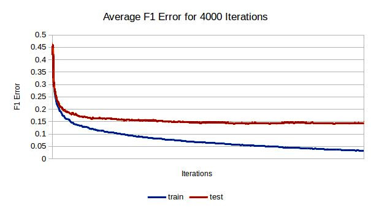
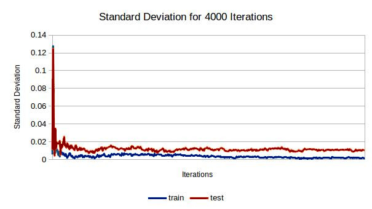

As part of a competitive class project on Kaggle, I implemented six different machine learning algorithms on a android app system call dataset. The training data consisted of 7600 apps with records of number of system calls for 360 different types system calls. The algorithms implemented were ID3, SVM, tree ensembles, Perceptron, Adaboost, and decision stumps. I used cross validation to tune hyper-parameters for each. Adaboost with decision stumps proved to be a good classifier for this set of data. Results of the competition can be seen here.
Prior to running the algorithm, each feature was sorted in ascending order and each feature was given equal weight. When finding a decision stump, each feature was analyzed separately. For each pair of sequential feature values (a and b) in the training for that feature, the gain for a division of the data at a + |a – b| / 2 was calculated. The gain was calculated by finding the maximum of positive weights below the division with negative weights above the division and negative weights below the division with negative weights above the division. ( max( (+weightsAbove + -weightsBelow), (+weightsBelow + -weightsAbove)) ) Whichever division of a feature produced the greatest gain was chosen to be the decision stump for that round. Adaboost was then implemented on the resulting weak classifier and the process was repeated with updated weights.
There were no hyperparameters besides the number of iterations used. Four fold cross validation was implemented to find the best number of iterations to use. Below are graphs displaying the results of this validation. The error rate of the training set continually decreased and the error rate on the training set remained at a fairly constant 15% with about 1% standard deviation. The classifier was consistently over fit to the training. I expected the error rate of the testing sets to eventually increase as training proceeded, however errors on the testing sets seemed to remain constant after a few hundred iterations. Any classifier made with over a thousand iterations on this algorithm would be a good candidate to submit for the competition.
 